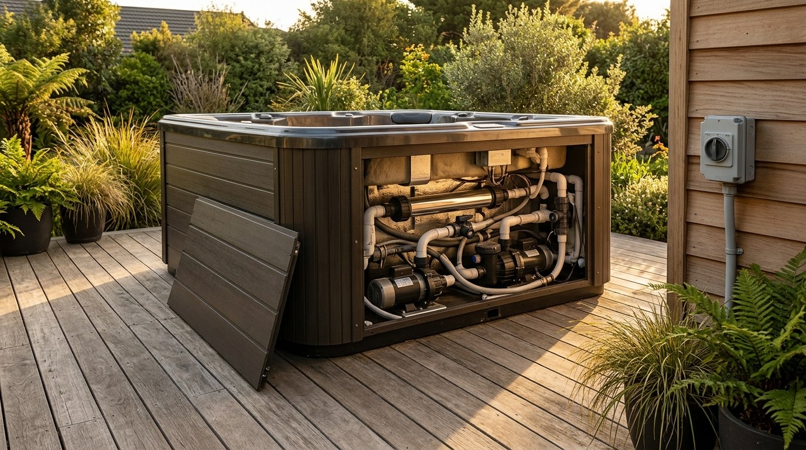

Jakuzi altyapısı: elektrik, su, tahliye ve taşıma yükü notu
Güncelleme: 21 Ekim 2026

Kapak: yapay zekâ ile üretilmiş konsept görsel; teslim edilmiş bir projenin fotoğrafı değildir.
Jakuzi seçerken model, jet sayısı ve renk konuşulur. Montaj günü ise başka sorular çıkar: hat yeterli mi, tahliye nereye, döşeme bu yükü taşır mı? Sauna Dekor Spa Solutions olarak jakuzi siparişinden önce bu beş kalemi müşteriyle tek tek kapatıyoruz.
1. Taşıma yükü
Dolu bir jakuzinin ağırlığı su, gövde ve kullanıcılarla birlikte hesaplanır.
Örnek: 1.500 litre suyla dolan bir jakuzi yalnız suyla 1.500 kg eder. Gövde yaklaşık 350 kg, beş kullanıcı yaklaşık 400 kg ekler. Toplam 2.250 kg, 2,2 × 2,2 m'lik tabana (4,84 m²) yayıldığında metrekareye yaklaşık 465 kg düşer.
Bahçede bu yük düz bir beton tabla ile karşılanır. Terasta ya da çatıda ise statik mühendisin onayı şarttır; yük kolonlara yakın bir noktaya konmalıdır.
2. Elektrik hattı
Isıtıcı, pompalar ve hava üfleyici birlikte çalışınca jakuzi evin en büyük tüketicilerinden biri olur. Üreticinin istediği güç, faz sayısı ve sigorta değeri hat çekilmeden önce öğrenilmeli. Hatta kaçak akım rölesi bulunmalı, jakuzinin yanına görünür ve ulaşılır bir ayırıcı şalter konmalı.
3. Su ve tahliye
Jakuzi hortumla doldurulabilir; ama boşaltma için yakın bir tahliye noktası gerekir. Gövdenin tahliye vanası ile tahliye noktası arasında eğim olmalı. Teras jakuzisinde tahliye yağmur suyu hattına değil, pis su hattına bağlanmalıdır.
4. Servis boşluğu
Pompa ve ısıtıcı jakuzinin gövdesindeki servis kapağının arkasındadır. Bu kapağın önünde en az 60–80 cm boşluk kalmalı. Jakuzi dört yandan ahşap deke gömülecekse servis kapağı tarafı sökülebilir panelle bırakılır.
5. Kapalı alanda havalandırma
Kapalı mekândaki jakuzi suyu sürekli buharlaştırır. Mekânda nem alma ya da mekanik havalandırma yoksa camda yoğuşma ve tavanda küf görülür. Bu nedenle kapalı alandaki jakuzi, ıslak hacim gibi projelendirilmelidir.
Sipariş öncesi kontrol
- ☐ Statik onay (teras/çatı)
- ☐ Hat gücü, faz, sigorta ve kaçak akım rölesi
- ☐ Tahliye noktası ve eğim
- ☐ Servis kapağı önünde 60–80 cm boşluk
- ☐ Vinç ya da taşıma güzergâhı (kapı genişliği, merdiven)
Kaynakça
- Türk Standardları Enstitüsü (TSE)
- WHO, Güvenli rekreasyonel su ortamları kılavuzu, Cilt 2
- PWTAG, Pool Water Treatment Advisory Group
Model seçimi ve montaj adımları için jakuzi ve hidromasajlı küvet sayfamıza bakabilirsiniz.
Yazar hakkında. Sauna Dekor Spa Solutions; sauna, buhar odası, Türk hamamı, soğuk daldırma havuzu, havuz ve anahtar teslim spa merkezi tasarlar, üretir ve kurar. 1987'de İstanbul'da kurulan firma 2026'da 40. yılında; üretimi İstanbul'daki kendi tesisinde 19 çalışanla yapıyor, TS EN ISO 9001:2015 belgeli (belge no 202025106) ve 35+ ülkede 5.000+ proje teslim etti.